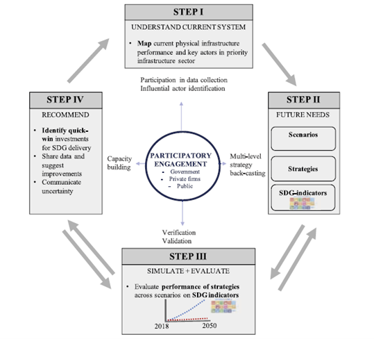
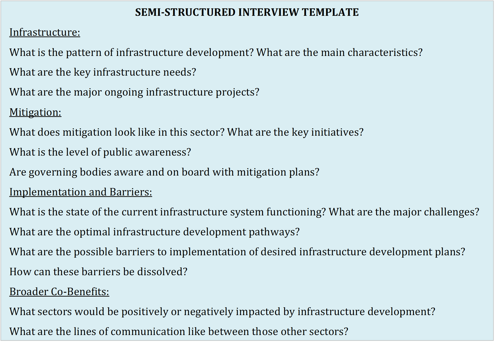

Mini-lecture 3.2 outlines methods of gathering data on infrastructure assets as well as sources of information. The mini-lecture explores the use of desktop studies, and stakeholder engagement in conducting participatory research.
Mini-lecture 3.1 identified the fields of data that are needed to evaluate current infrastructure performance. Following on from this, mini-lecture 3.2 illustrates methodologies to gather the needed data and points towards key information sources.
Research has shown that evidence-based infrastructure planning rooted in participatory processes yield the best results (Fuldauer et al. 2019). Infrastructure planning has often been fragmented; stakeholders from each infrastructure system have operated in their silos and missed sustainable development opportunities that arise from collective action. Participatory research facilitates integrated cross-sectoral infrastructure planning by involving key stakeholders throughout the planning process (Fuldauer et al. 2019). The following sections delve into two key aspects of participatory research:
Desktop studies: Involves extracting key information from key documents and conducting stakeholder mapping.
Stakeholder engagement: Involves interviewing key stakeholders across the public and private sector and civil society.
Participatory research methods can be utilised throughout evidence-based infrastructure development process from data collection to scenario planning, modelling and evaluating infrastructure strategies, and developing action plans. Figure 3.2.1 depicts how participatory engagement is involved in key steps in the evidence-based infrastructure development process.

Figure 3.2.1: Participatory engagement involvement in the evidence-based infrastructure development process (Fuldauer et al. 2019)
Involving key stakeholders throughout the planning process enables the stakeholders to take ownership of the development plans. It facilitates commitment to implementation through interdisciplinary collaboration and coordinated efforts (Fuldauer et al. 2019).
As highlighted in Figure 3.2.1, stakeholders play a critical role in collecting the data needed to evaluate the performance of current infrastructure. This can be achieved through desktop studies, stakeholder interviews, and workshops – detailed in the following sections.
Desktop studies consist of conducting research to capture physical infrastructure data as well as develop a multi-level stakeholder map. Conducting a multi-level stakeholder map involves identifying influential stakeholders in each infrastructure system. Stakeholder mapping should target stakeholders who can influence or be affected by the infrastructure planning process (Fuldauer et al. 2019).
Information on infrastructure data and stakeholders can be obtained through open-source policy documents, strategies, plans, assessments, studies, and reports. These documents can often be found on the websites of relevant government ministries and departments, utilities, regional and international research institutions, and international development agencies, among others. Information from these sources may include primary or secondary data, or point towards the source of primary data.
Knowledge gained from the desktop studies guides and provides background knowledge for stakeholder engagement. Further, stakeholders should be consulted to verify the information found, provide the most up-to-date information, and/or to fill any data gaps. If the key stakeholders identified are not able to access the most recent data, they are often able to direct towards another actor who can.
While there are different ways of engaging with stakeholders, semi-structured interviews and workshops through snowball sampling are most efficient when the stakeholders’ roles are not clearly defined or easily identified externally (Fuldauer et al. 2019). Snowball sampling involves identifying a core group of stakeholders and asking them to point you towards other stakeholders you should speak to. Further, for semi-structured interviews researchers develop broad topics and sample questions they would like to ask but leave room for changes depending on the direction of conversations. Figure 3.2.2 below depicts an example set of questions developed for semi-structured interviews to assess infrastructure development in line with the Paris Agreement and Sustainable Development Goals.

Figure 3.2.2: Questions used to guide semi-structured interviews on infrastructure development in line with the Paris Agreement and the Sustainable Development Goals (Vital 2019)
Mini-lecture 3.2 provided an overview of methods to gather infrastructure information, grounded in participatory processes. The mini-lecture highlighted the use of desktop studies and stakeholder engagement. Further application of participatory processes is addressed in subsequent lectures, which explain future infrastructure needs and drivers (Lecture 4), setting infrastructure visions (Lecture 5), and developing and analysing strategic alternatives (Lectures 6-7).